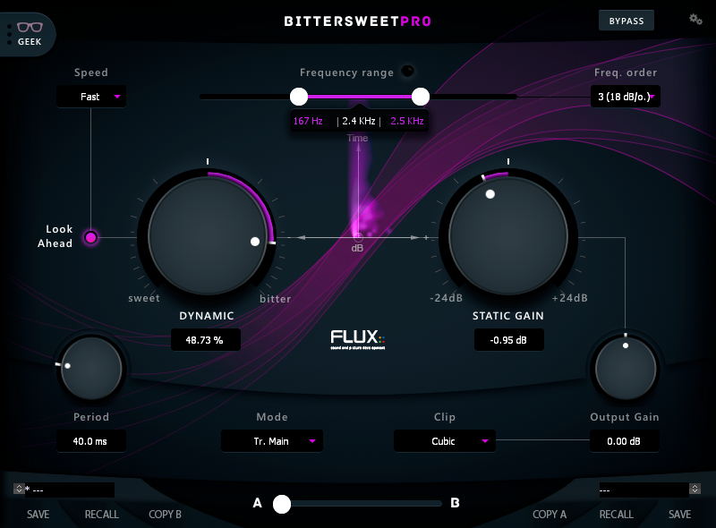

2 General Settings

| Bypass | Static Gain |
| Speed | Period |
| Lookahead | Mode |
| Dynamic | Clip |
| Frequency Range | Output Gain |
| Frequency Order | Processing Display |
2.1 Bypass
Global bypass, when pressed, the signal is routed directly from the inputs to the outputs.
Value Range: Enabled/Disabled
Default Value: Disabled
2.2 Speed
The Speed parameter alters the mode for the processing of the transients, controlling the envelope smoothing and generating a natural attack, when set to Medium or Slow this can be compensated using Lookahead.
Value Range: Fast/Medium/Slow
Default Value: Fast
2.3 Lookahead
Introduces a delay line to the processing path to re-sync the processing according to the speed mode, which is the interpolation time. When Lookahead is enabled a delay is introduced in the processing (not in the detection).
Value Range: Enabled/Disabled
Default Value: Disabled
2.4 Dynamic
A dynamic gain, that depending on the Mode setting dynamically adjusts the gain of the transients and/or the sustain.
The Sweet side reduces the transients, which typically decrease the perceived presence of percussive instruments in the mix. The Bitter side magnifies the transients, which typically increases the perceived presence of percussive instruments in the mix. If a Mode Ø setting is selected, Bitter is increasing the Transients and decreasing the Sustain, while Sweet is doing the opposite, increasing the Sustain and decreasing the Transients.
Value Range: -100,00% (Sweet) / 100,00% (Bitter)
Default Value: 0,00%
2.5 Frequency Range
Frequency Range sets the actual frequency range that is to be processed.
If neither of the Lower or Upper values are adjusted, the BitterSweet Pro operates in Full Band. By adjusting the Lower Value a high shelf filter is introduced, and by adjusting the Upper Value a low shelf filter is introduced, adjusting both introduces a peak filter. In any case, the filter slope can be adjusted with the Frequency Order parameter, and the gain can be adjusted with the Static Gain parameter.
The button above the slider is a key listener provided for listening to the extraction used for the analysis of the material.
Lower Value Range: 20 Hz / 20,0 kHz
Lower Default Value: 20 Hz
Upper Value Range: 40 Hz / 20,0 kHz
Upper Default Value: 20,0 kHz
2.6 Frequency Order
The Frequency Order sets the number of frequency-dependent components controlling the slope of the frequency response. One component, referred to as 1 (First-Order), gives a 6 dB/Octave slope, adding a second component, referred to as 2 (Second-Order), gives a 12 dB/Octave slope etc. The higher the Frequency Order is, the steeper the slope of the frequency response becomes.
Value Range: 6 / 12 / 18 / 24 - dB Per Octave
Default Value: 6 dB/o
2.7 Static Gain
Controls the actual gain of the Frequency Range filter envelope.
Value Range: -24.00 dB / +24.00 dB
Default Value: 0.00 dB
2.8 Period
The Period parameter sets the range of the time window used for the detection of the transients that are to be processed which adjusts the extraction of the transient information. By using Period the extraction can be adjusted depending on the material that is to be processed, which in the end will affect the result differently depending on the setting.
Value Range: 20.0 ms / 120.0 ms
Default Value: 40.0 ms
2.9 Mode
The Mode setting adjusts how BitterSweet Pro is processing the material.
Component
- Main - processes using regular stereo signal scheme and it’s the only available mode for multichannel operations.
- Center - engages the internal MS encoder and processes only the Mid channel. After processing, the sound is decoded back to stereo. This setting is very efficient for snare and kick drums.
- Stereo - engages the internal MS encoder and processes only the Side channel. After processing the sound is decoded back to stereo. This setting is very efficient for panned rhythmic instruments.
Processing
- Tr. - Transients only.
- Sust. - Sustain only.
- Tr+Sus - Both Transients and Sustain.
- Ø - Means that Dynamic/Bitter is increasing the Transients and decreasing the Sustain, while Dynamic/Sweet is doing the opposite, increasing the Sustain and decreasing the Transients.
Value Range:
Tr. Main / Tr. Center / Tr. Stereo
Sust. Main / Sust. Center / Sust. Stereo
Tr. + Sust. Main / Tr. + Sust. Center / Tr. + Sust. Stereo
Tr. + Sust. Ø Main / Tr. + Sust. Ø Center / Tr. + Sust. Ø Stereo
Default Value: Tr. Main
2.10 Clip
Enables the built in soft clipper, applied at the very last stage of the processing.
The soft clipper is carefully compressing and flattening the peaks in order to clip the level of the input signal. As the input signal reaches the clip threshold, the algorithm rounds the edges of the clipped peaks for a smoother clipping.
Cubic is a digital style symmetrical soft clipper (introducing odd-order harmonics).
Tube is a kind of analog style asymmetrical soft clipper (introducing even-order harmonics).
Value Range: Off / Cubic / Tube
Default Value: Cubic
2.11 Output Gain
Sets the global gain applied to the processing output before the soft clipper.
Value Range: -24.00 dB / +24.00 dB
Default Value: 0.00 dB
2.12 Processing Display
Displays a graphical representation of the actual transient and sustain processing.